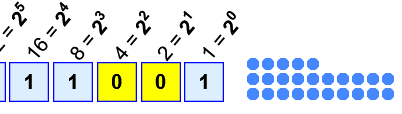

Binary, Decimal and Hexadecimal Numbers
Decimals
How do Decimal Numbers work?
Every digit in a decimal number has a "position", and the decimal point helps us to know which position is which:

The position just to the left of the point is the "Ones" position. If we see a "7" there we know it means 7 ones.
Every position further to the left is 10 times bigger, and every position further to the right is 10 times smaller
This is just a way of writing down a value. Other ways include Roman Numerals, Binary, Hexadecimal, and more. You could even just draw dots on a sheet of paper!
Bases
The Decimal Number System is also called "Base 10", because it is based on the number 10, with these 10 symbols:
0, 1, 2, 3, 4, 5, 6, 7, 8 and 9
But notice something interesting: there is no symbol for "ten". "10" is actually two symbols put together, a "1" and a "0":
In decimal you count "0,1,2,3,4,5,6,7,8,9,..." but then you run out of symbols!
So you add 1 on the left and then start again at 0: 10,11,12, ...
| 0 | Start at 0 | ||
| • | 1 | Then 1 | |
| •• | 2 | Then 2 | |
| ⋮ | |||
| ••••••••• | 9 | Up to 9 | |
| •••••••••• | 10 | Start back at 0 again, but add 1 on the left | |
| •••••••••• • |
11 | ||
| •••••••••• •• |
12 | ||
| ⋮ | |||
| •••••••••• ••••••••• |
19 | ||
| •••••••••• •••••••••• |
20 | Start back at 0 again, but add 1 on the left | |
| •••••••••• •••••••••• • |
21 | And so on! |
Counting with Different Number Systems
But you don't have to use 10 as a "Base". You could use 2 ("Binary"), 16 ("Hexadecimal"), or any number you want to!
Example: In binary you count "0,1,..." but then you run out of symbols!
So you add 1 on the left and then start again at 0: 10,11 ...
See how to count dots using Bases from 2 to 16 (press Play button):

Example: 1×16 + 1×8 + 1×1 = 16+8+1 = 25
Try this: select a Base, watch it count for a while, then press "||" (Pause). Now see if it has tallied the right number of dots, as in this example using base 2.
So the general rule is:
Count up until just before the "Base Number", then start at 0 again, but first you add 1 to the number on your left.
Binary Numbers
Binary Numbers are just "Base 2" instead of "Base 10". So you start counting at 0, then 1, then you run out of digits ... so you start back at 0 again, but increase the number on the left by 1.
Like this:
| 0 | Start at 0 | ||
| • | 1 | Then 1 | |
| •• | 10 | there is no "2" in binary, so start back at 0 ... ... and add one to the number on the left |
|
| ••• | 11 | ||
| •••• | 100 | start back at 0 again, and add one to the number on the left... ... but that number is already at 1 so it also goes back to 0 ... ... and 1 is added to the next position on the left |
|
| ••••• | 101 | ||
| •••••• | 110 | ||
| ••••••• | 111 | ||
| •••••••• | 1000 | Start back at 0 again (for all 3 digits), add 1 on the left |
|
| ••••••••• | 1001 | And so on! |
Hexadecimal Numbers
Hexadecimal numbers are interesting. There are 16 of them!
They look the same as the decimal numbers up to 9, but then there are the letters ("A',"B","C","D","E","F") in place of the decimal numbers 10 to 15.
So a single Hexadecimal digit can show 16 different values instead of the normal 10 like this:
| Decimal: | 0 | 1 | 2 | 3 | 4 | 5 | 6 | 7 | 8 | 9 | 10 | 11 | 12 | 13 | 14 | 15 |
|---|---|---|---|---|---|---|---|---|---|---|---|---|---|---|---|---|
| Hexadecimal: | 0 | 1 | 2 | 3 | 4 | 5 | 6 | 7 | 8 | 9 | A | B | C | D | E | F |
And we count in Hexadecimal like this:
| 0 | Start at 0 | ||
| • | 1 | Then 1 | |
| •• | 2 | Then 2 | |
| ⋮ | |||
| •••••••••• ••••• |
F | Up to F | |
| •••••••••• •••••• |
10 | Start back at 0 again, but add 1 on the left | |
| •••••••••• ••••••• |
11 | ||
| •••••••••• •••••••• |
12 | ||
| ⋮ | |||
| •••••••••• •••••••••• •••••••••• • |
1F | ||
| •••••••••• •••••••••• •••••••••• •• |
20 | Start back at 0 again, but add 1 on the left | |
| •••••••••• •••••••••• •••••••••• ••• |
21 | And so on! |